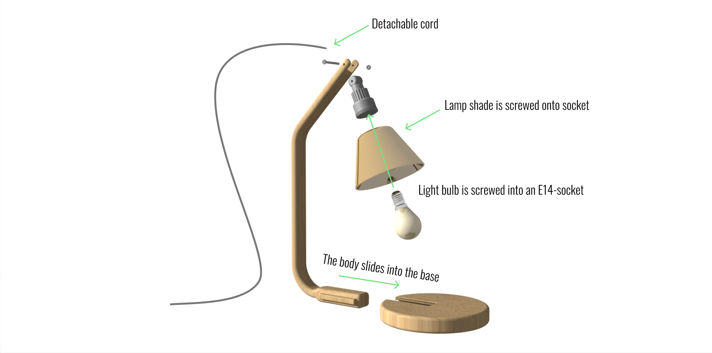

Overview
A lamp that will last you a lifetime. Through carefully selected materials and replaceable parts, the lamp never goes out of style! Choose from a big selection of different armatures and lamp shades to create your custom lamp. This product design project was part of the course sustainable development.
The challenge
In today’s society, people consume products at a faster rate than the planet can tolerate. There are multiple underlying causes for this behaviour. On the one end, it’s the consumers who constantly buy the latest interior items. On the other hand, it is the producer who produces bad quality products for a cheap price.
Keywords: Sustainable development, product design, design for attachment, graceful aging
To start analysing the problem, the team analyzed the lamp's function and disassembled it. Granta EduPack was used to conduct a life cycle assessment to identify the main sustainability issues. The main findings were:

In the course, we were presented with different design approaches for sustainable products. Two of them were chosen for our project: Design for attachment and Design for graceful ageing. The reason that the cheap lamp was probably not thrown away was that it was broken, but because people simply got tired of it or because it was ageing poorly.
Forever Lamp has a minimalistic design with few components that easily can be replaced. No longer a single component that determines the life span of the lamp. It is timeless and can be placed in most rooms around your home. Since personal taste might change as time passes, the lamp has different armature and shades to go with it.
This is how we solved the problems:
It is easy to get caught up in designing an aesthetically beautiful and functional product. This course project gave me a new approach to the design process that I previously had not used. My main takeaway from this project is that do your research before starting the ideation process, to pinpoint the most unsustainable parts of the project. it might not always be visible, such as long transportation or other emissions during manufacturing.
Contact